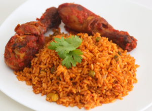

Jollof rice is a very popular dish in many West African countries. It is known to be very delicious
because of the ingredients used to prepare the dish. It is usually served at special occassions such as weddings,
birthday parties, and so on. It can be eaten with chicken, beef, fish, alone, or anything desired. There are several
methods to make the dish and still taste delectable. If you are curious on how to make this dish...look no further,
relax, and learn from this step-by-step instructions!

A picture of jollof rice served with chicken and some mixed vegetables!
Picture taken from www.naijasphere.com
Ingredients
The ingredients needed depends on the size of food to be cooked:
3/4 cups of rice (118.5g)
2 pieces of ripe tomatoes
1 tin of tomato paste (optional)
4 pieces of red ball pepper
2 pieces of habanero pepper
1 big onion
Ginger/garlic (optional)
Shrimps
Ground chicken or turkey
Mixed vegetables (optional)
Salt
Thyme
Curry powder
Knorr Chicken Flavor Bouillon Cubes (4)
Fried/grilled chicken
Chicken broth/stock
Vegetable oil
Preparation
Cut the peppers, tomatoes, onions, and garlic/ginger into small bits and pour into the blender
Put the blender on low; don't fully blend, but make sure there are no big chunks of pepper
Measure 3/4 cups of rice and rinse well to remove starch, then pour into a sieve to drain water
Pour one cooking spoon of oil into the pot and place on gas stove with medium heat
Cut onions into small bits and pour into the pot when the oil is a little hot, just to add flavor
Carefully pour the blended pepper into the pot and spread evenly with spoon